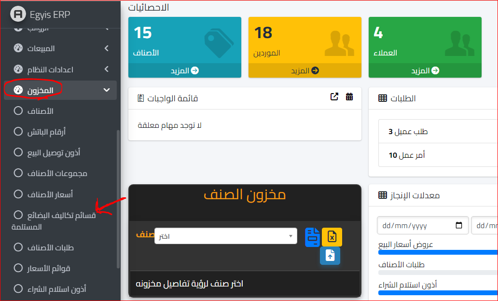
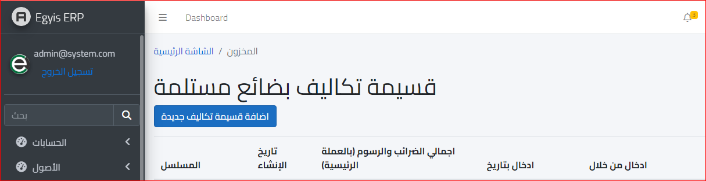
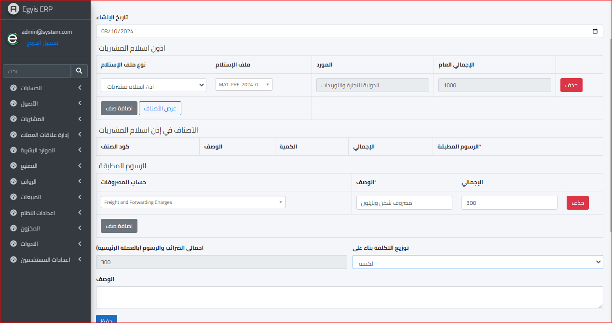

قسائم تكاليف البضاعة المستلمة
قسائم تكاليف البضاعة المستلمة : وباختصار هي عبارة عن اضافة مصروف مفاجئ لم يكن في الحسبان مثل : الإكراميات أو نحوها فهي تعد مصروف يجب أن يحمل على تكلفة البضاعة وبالتالي
فهذا يساعد علي معرفة التكلفة النهائية بطريقة دقيقة ممكن يساعد على إعداد قوائم مالية دقيقة تعبر عن المركز المالي للمؤسسة
ولعمل قسيمة تكاليف جديدة يتم الذهاب الى موديول المخزون واختيار قسائم تكاليف البضاعة المستلمة كما هو موضح بالشكل التالي :
ثم بعد ذلك ستفتح الشاشة التالية :
ثم نختار اضافة قسيمة تكاليف جديدة وستظهر الشاشة التالية :
أذون استلام المشتريات : يتم اولا اضافة صنف واختيار نوع ملف الاستلام "اذن استلام مشتريات ام فاتورة مشتريات " واختيار رقم الاذن او رقم الفاتورة مع العلم انه يمكن اضافة اكثر من صنف كل ما عليك فعله هو فقط تحديد نوع الملف و رقمه
الرسوم المطبقة : وهي عبارة عن حساب المصروفات ويتم اختياره ووضع الوصف الخاص به وايضا تحديد قيمة الإجمالي " مع العلم انه يمكن اضافة اكثر من صنف ايضا "
إجمالي الضرائب والرسوم بالعملة الرئيسية : وهو سيحسب تلقائيا بواسطة السيستم طبقا للمبلغ الموضوع
توزيع التكلفة بناءا على :
- الكمية
- الاجمالي
- توزيع يدوي
- وعند الانتهاء يتم الضغط على زر حفظ